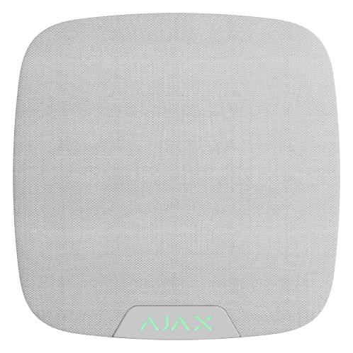

Gamme
Vidéosurveillance
Caméras IP, sonnette et NVR Ajax Systems, intégrés à l’alarme pour une levée de doute visuelle.
Baseline vs Superior
Choisir le bon niveau.
La disponibilité Superior dépend des références et du projet. Orientation lors de l’étude gratuite.
Baseline · 46 références
L’essentiel, sans fil.
Large choix sans fil pour les besoins standards. Déploiement rapide, interface unique, évolutif : idéal pour démarrer et faire grandir votre système.
- Caméras filaires30 réf.
- Enregistreurs vidéo13 réf.
- Modules d'interphonie1 réf.
- Caméras Wi-Fi1 réf.
Superior · 13 références
Pour les projets exigeants.
Sans fil et/ou filaire, multi-zones, sites sensibles : options avancées selon les références. Sur étude Active Sécurité 974, partenaire agréé Ajax Systems.
- Enregistreurs vidéo7 réf.
- Caméras filaires6 réf.
Baseline
Sélection du catalogue AS974.



Dans cette gamme
Tous les types de produits.
Prêt à sécuriser votre espace ?
Étude et devis gratuits, sans engagement. Intervention chez vous, partout à La Réunion.